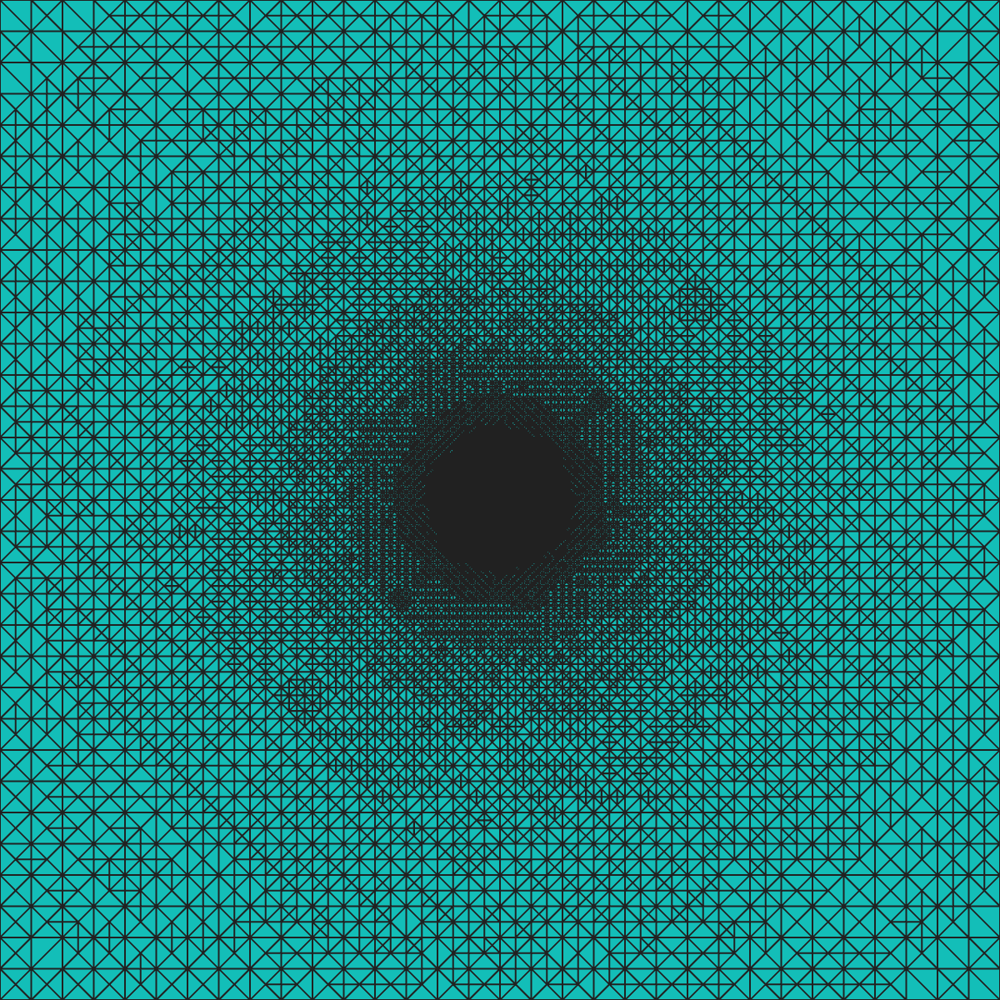
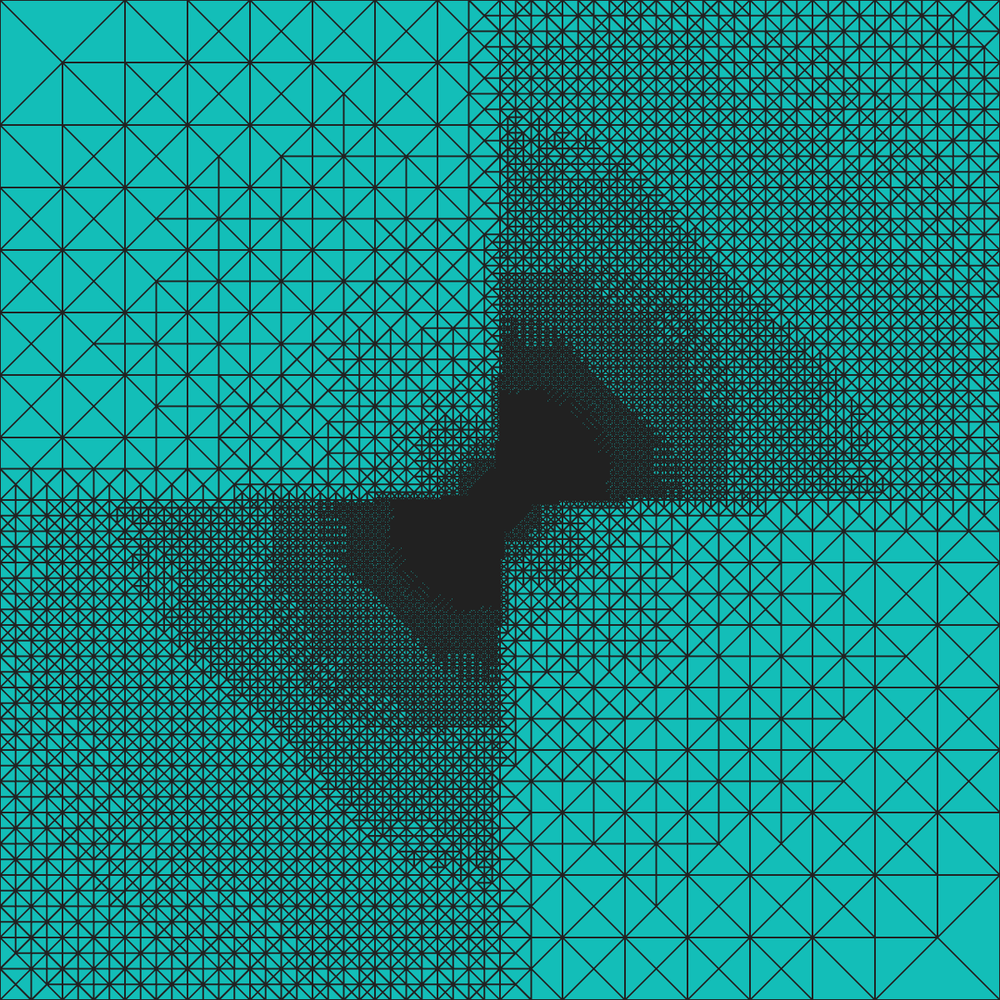
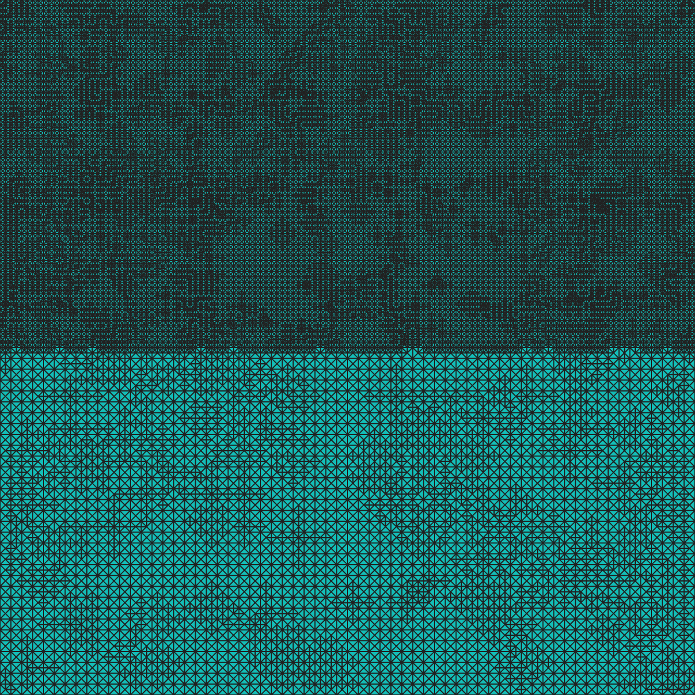

Why Is the Kellogg Mesh Radial?
為什麼 Kellogg 網格是徑向的？
A hidden coefficient-weighted energy symmetry explains the familiar adaptive mesh.
一個隱藏的系數加權能量對稱性，解釋了那張人們熟悉的自適應網格。
The Unexplained Picture 一張長期缺少解釋的圖
Kellogg's checkerboard interface problem is a classical benchmark for coefficient-robust adaptive finite element methods. A successful adaptive mesh refines strongly toward the interface crossing, yet remains concentric: it has no persistent preference for either pair of quadrants and no excess refinement along the coefficient interfaces.
Kellogg 棋盤型界面問題是檢驗系數魯棒自適應有限元方法的經典 benchmark。正確的自適應網格會強烈加密界面交叉點，卻保持同心的徑向結構：它不會持續偏向某一對象限，也不會沿係數界面產生額外加密。
The puzzle is genuine. The coefficient has a large checkerboard contrast, and the singular solution is angularly asymmetric. Neither the coefficient nor the solution itself suggests radial symmetry.


第一張圖展示理論所預測的徑向配置；第二張圖則把錯誤的係數權重直接轉化成肉眼可見的象限偏置。兩張圖在相近的問題背景下對比，說明網格形狀本身包含收斂率無法提供的資訊。
The Benchmark Kellogg 模型
On the square Ω = (−1,1)2, the diffusion coefficient κ equals R in the first and third quadrants and 1 in the second and fourth. The exact singular solution has the homogeneous form
For the standard choice γ = 0.1, the coefficient contrast is approximately R = 161.4476. The solution is very singular at the interface crossing and strongly asymmetric in angle.
在標準參數 γ = 0.1 下，係數跳躍約為 R = 161.4476。解在界面交叉點具有很強的奇異性，並且在角方向上高度不對稱。
The Hidden Energy Symmetry 隱藏的能量對稱性
The decisive quantities are not the unweighted gradient or the coefficient separately. They are the coefficient-weighted local quantities selected by the energy norm. For the Kellogg singular mode, they satisfy the exact identities
Here the Hessian is taken separately in each quadrant. The remarkable point is what has disappeared: both right-hand sides depend only on the radius r. The angular variable and the coefficient contrast have vanished from the weighted difficulty.
其中 Hessian 在每個象限內分片計算。真正關鍵的是消失了什麼：兩個等式的右端都只依賴半徑 r。角變量與係數跳躍都從加權後的局部難度中消失了。
The weighted sector amplitudes balance exactly across all four quadrants, and the identities extend across the interfaces. Thus the interfaces carry no refinement signature of their own.
From Energy Symmetry to Mesh Density 從能量對稱性到網格密度
A robust method must respect the energy norm ‖κ1/2∇·‖. For an element K away from the origin, the local approximation scale is
No quadrant-dependent or interface-dependent factor remains. The principle of equal discretization-error distribution therefore requires elements at the same radius to have the same asymptotic size.
The Mesh Is a Visual Diagnostic 網格本身就是診斷工具
A convergence rate reports how the global error decays, but it does not tell us where the degrees of freedom have been placed. Rate optimality does not determine spatial allocation.
因此不能只看 convergence history。對這個 benchmark 而言，網格圖包含全局收斂率所沒有的空間配置資訊。
Radiality Is Special to This Benchmark 徑向性是這個 benchmark 的特殊結構
The conclusion is not that every robust estimator should produce a radial mesh. The Kellogg checkerboard is exceptional because its coefficient-weighted difficulty is radial. For a two-material problem whose weighted difficulty jumps across the interface, the same robust estimator correctly produces a strongly material-biased mesh.
結論並不是所有 robust estimator 都應產生徑向網格。Kellogg 棋盤問題之所以特殊，是因為它的系數加權難度恰好具有徑向性。對另一個加權難度在界面上跳躍的雙材料問題，同一個 robust estimator 應當產生強烈的材料偏置網格。

A Closed Formula for the Benchmark Benchmark 參數的閉式公式
The usual benchmark constants are often obtained from a nonlinear numerical solve and then copied from paper to paper. They actually follow from the elementary formulas
Thus the whole Kellogg family can be generated directly from γ at arbitrary precision.
因此，整個 Kellogg family 都可以只由 γ 直接生成，不再需要重複求解那個非線性參數系統。